Punto de alimentación gestionado dentro del proyecto piloto de Colonias Felinas de Algarrobo.
Este proyecto piloto pone a prueba un modelo organizado de punto de alimentación para evaluar su eficacia en el control poblacional, la salud de los gatos y el mantenimiento de un entorno limpio y ordenado.

Este diseño aún no está construido, se encuentra en fase de evaluación para su futura instalación. La estructura está pensada para ser económica y resistente, utilizando palés de madera reciclados o reutilizados como base principal. Los comederos están correctamente espaciados para que los gatos puedan alimentarse sin conflictos y fijados a la plataforma para evitar que se vuelquen o se caigan. La plataforma se sitúa en alto con respecto al suelo para reducir el acceso de otros animales, como los perros, y mejorar la higiene alrededor del punto de alimentación. El conjunto cuenta con un techado protector que cubrirá los comederos, diseñado para protegerlos de la lluvia y del sol, manteniendo la comida en buen estado y ofreciendo un área más confortable para los gatos.
| Total de gatos | 14 |
|---|---|
| Esterilizados | 11 |
| Pendientes | 3 |
| % esterilizados | 79% |
| Última actualización | febrero 2026 |
| Nombre | Imagen | Sexo | Esterilización | Salud visible | Carácter | |
|---|---|---|---|---|---|---|
| Alicia | 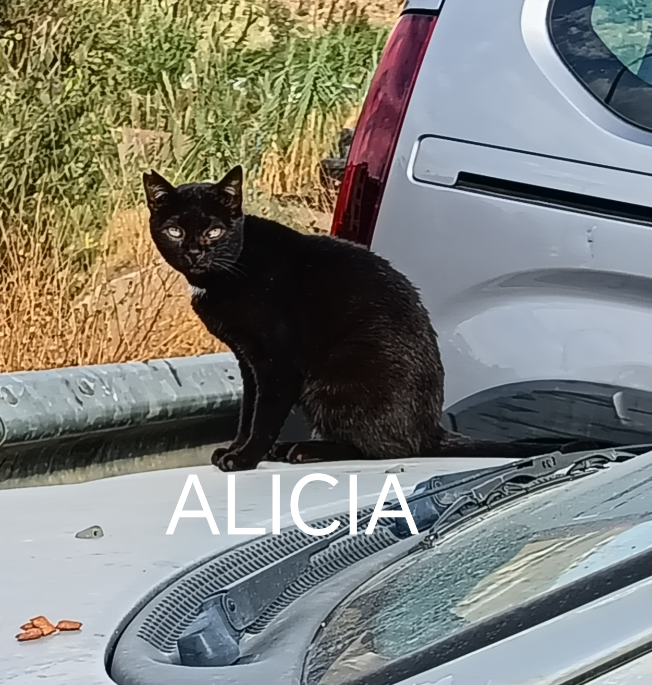 | Hembra | Sí | En observación | Asustadiza | |
| Ángela | 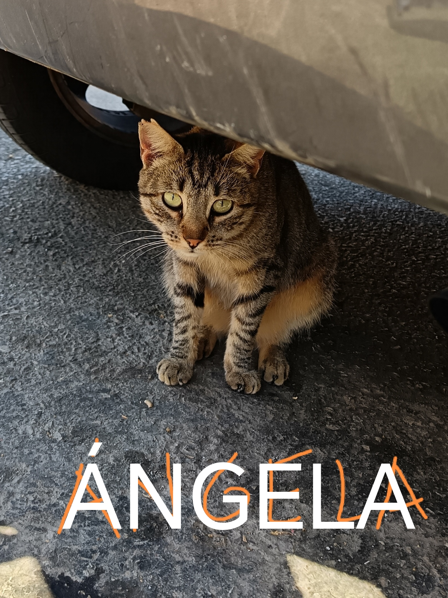 | Hembra | Sí | Buena | Tímida | |
| Aurora | 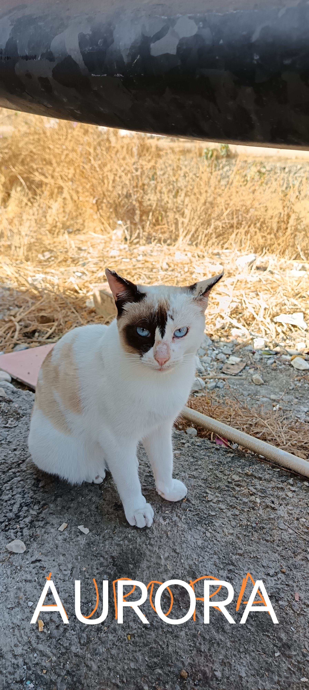 | Hembra | Sí | Buena | Sociable | |
| Emilio | 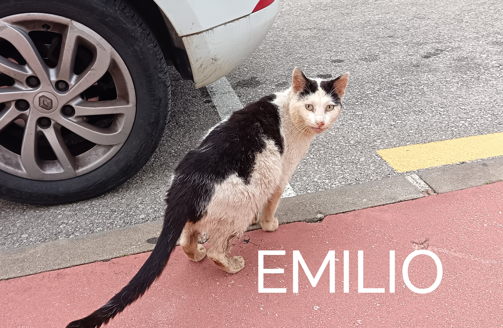 | Macho | Sí | En observación | Sociable | |
| Enrique | 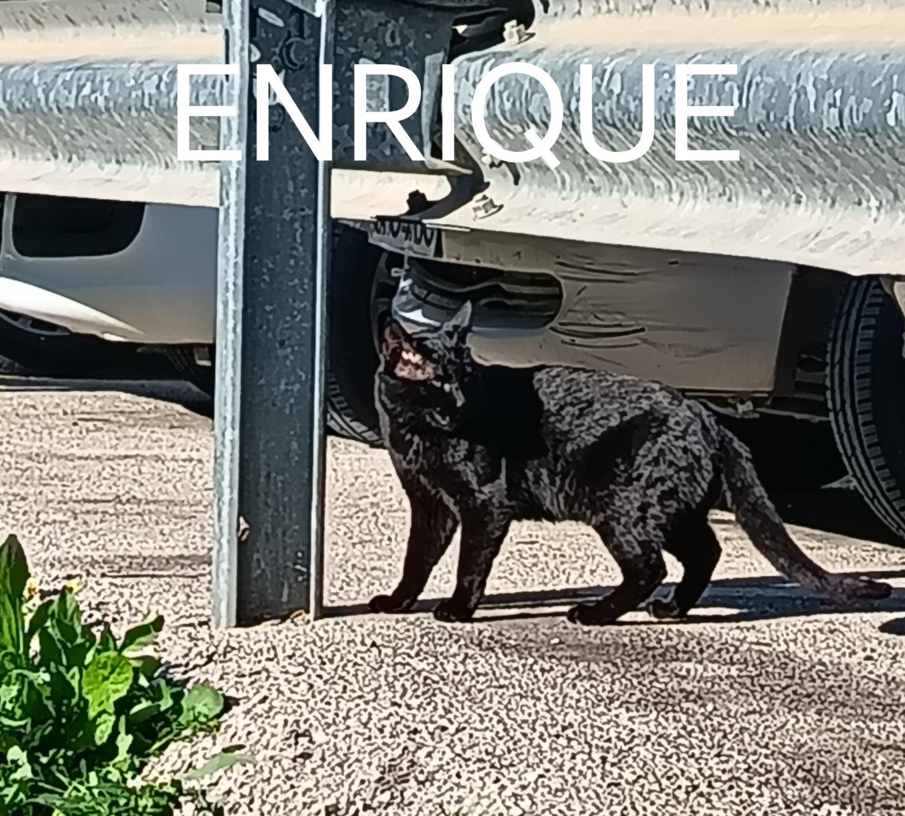 | Macho | Pendiente | Buena | Asustadizo | |
| Fátima |  |
Hembra | Sí | Buena | Tímida | |
| Fernando | 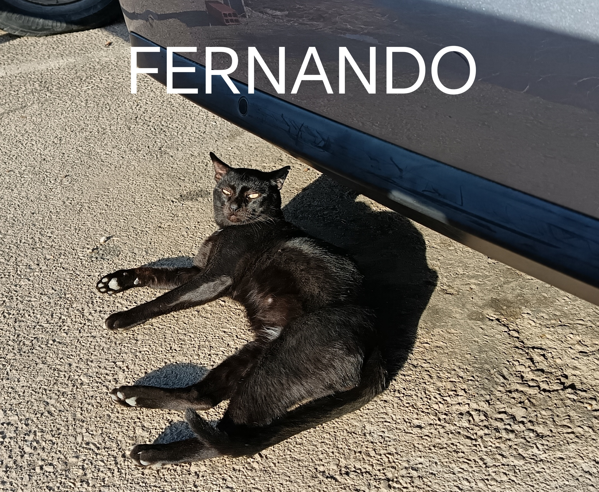 | Macho | Sí | Buena | Sociable | |
| Gerardo | 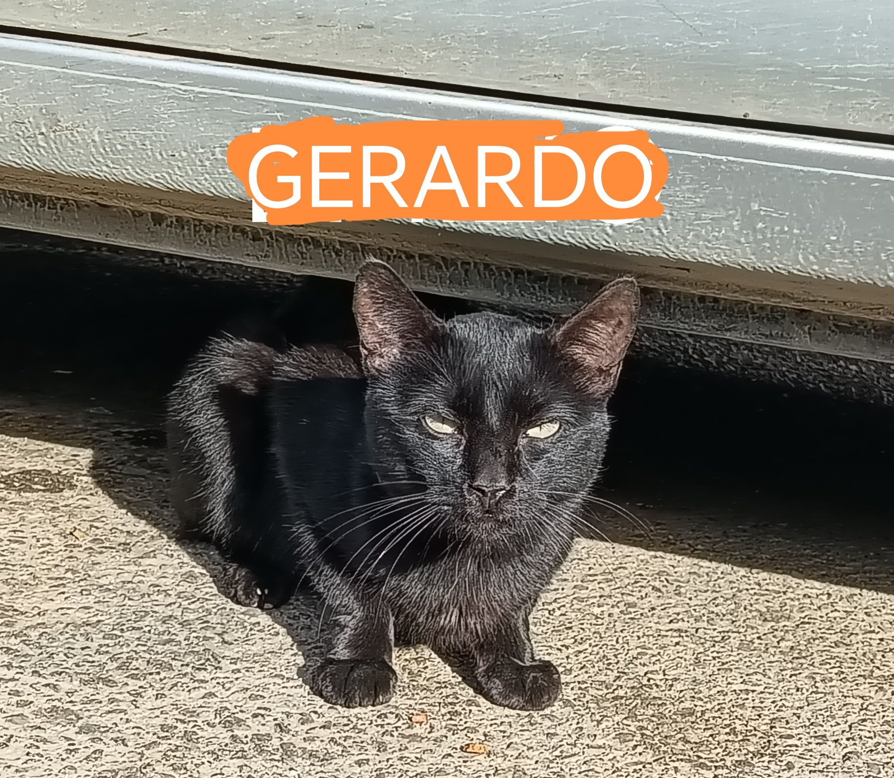 | Macho | Sí | Buena | Asustadizo | |
| Gustavo | 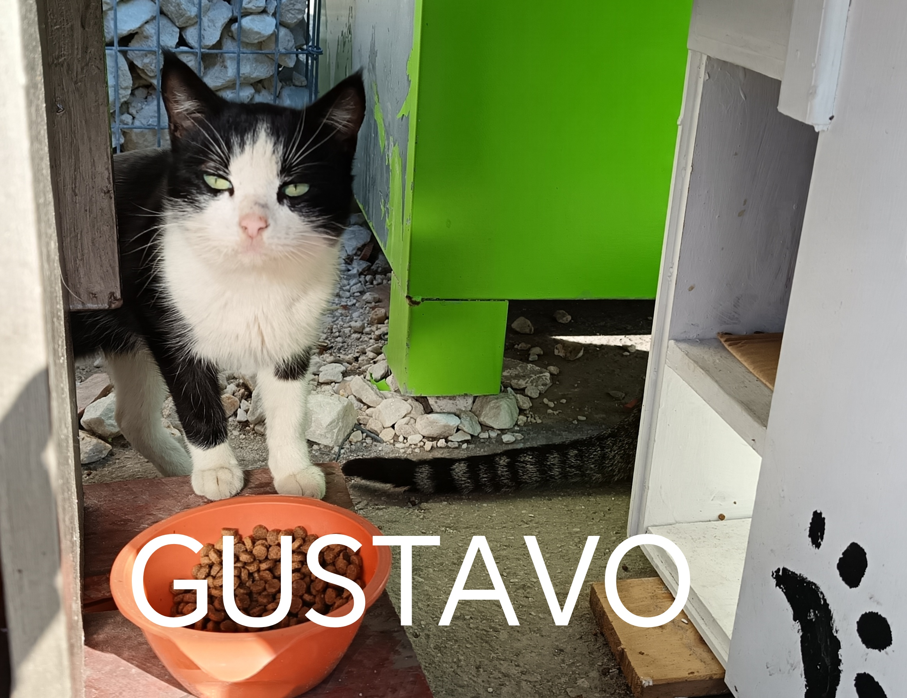 | Macho | Pendiente | Buena | Tímido | |
| Matilde | 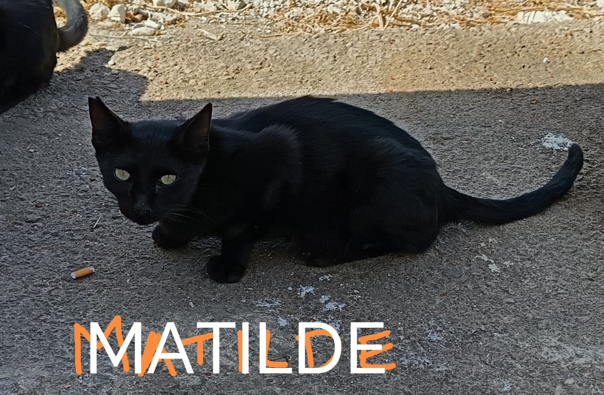 | Hembra | Sí | En observación | Tímida | |
| Patricia | 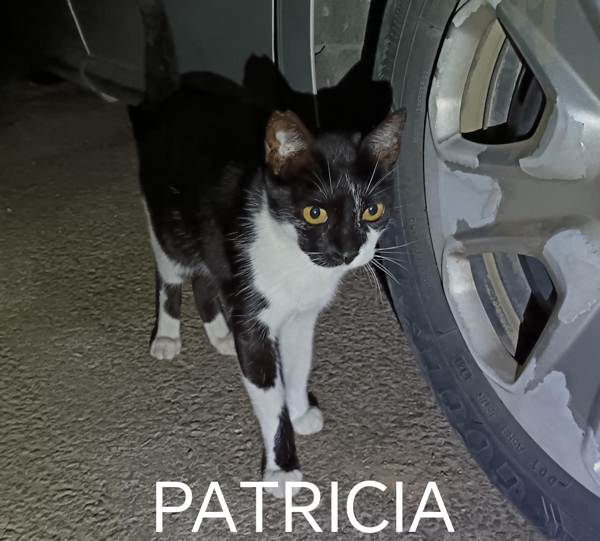 | Hembra | Sí | Buena | Sociable | |
| Roberta | 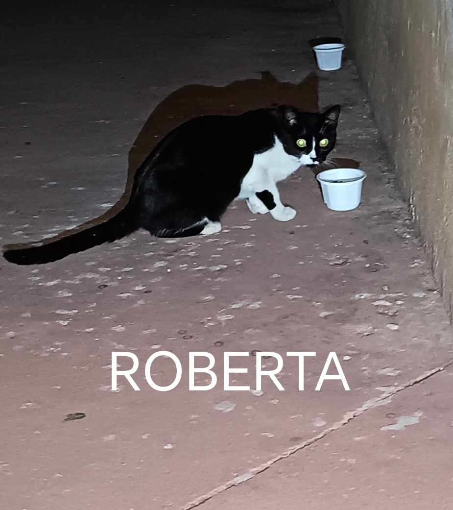 | Hembra | Sí | Buena | Tímida | |
| Rodrigo | 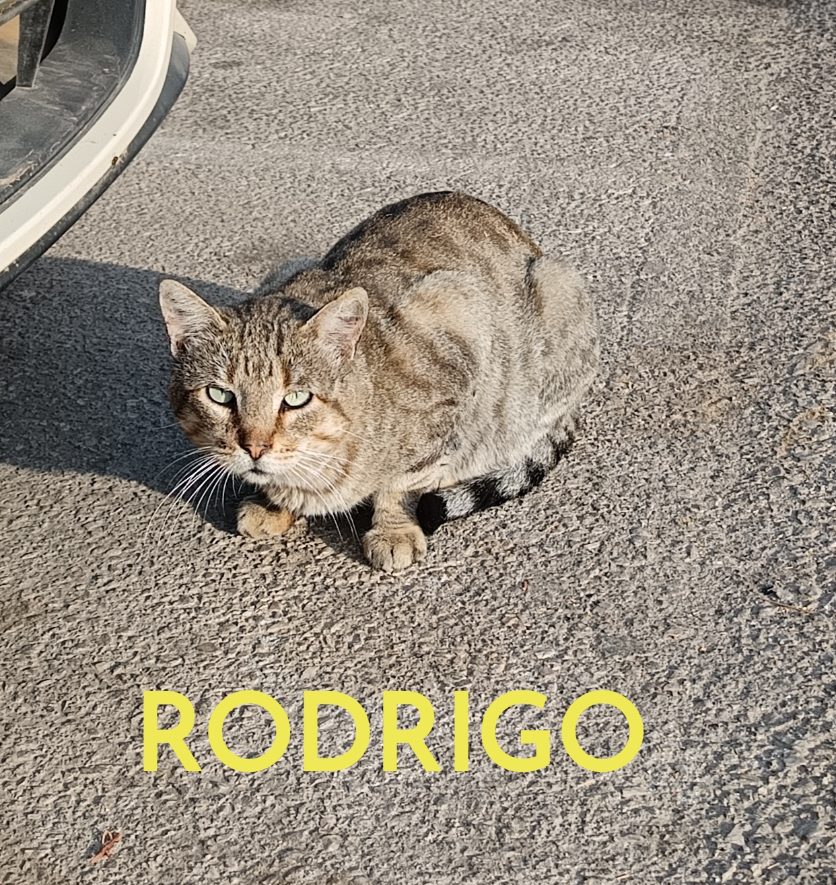 | Macho | Pendiente | Buena | Asustadizo | |
| Verónica | 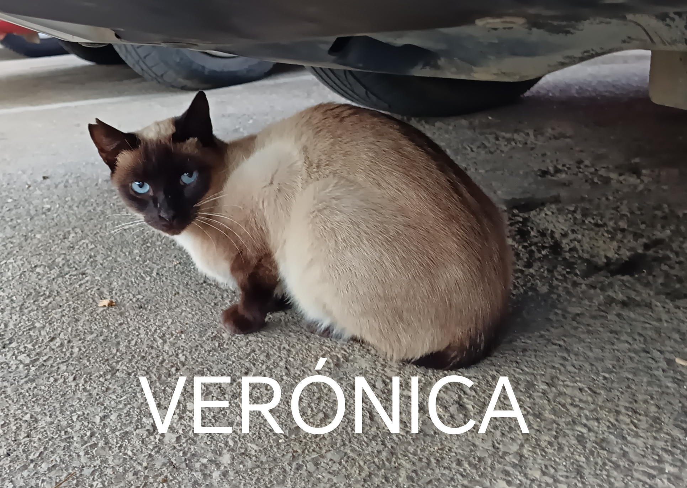 | Hembra | Sí | Buena | Asustadiza |
Este punto de alimentación se mantiene mediante alimentación responsable, esterilización y seguimiento continuo. Si quieres colaborar con proyectos similares en el futuro, puedes apuntarte en la sección “Cómo colaborar”.